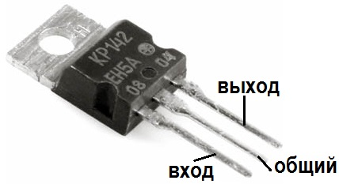
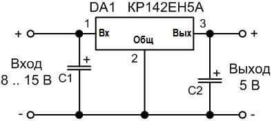

Стабилизатор КР142ЕН5А
Микросхема КР142ЕН5А - трехвыводный интегральный линейный стабилизатор с фиксированным выходным постоянным напряжением 5 В.
Область применения – в качестве источника питания для измерительной техники, логических систем, приборов высококачественного воспроизведения и прочих радиоэлектронных устройств. При необходимости стабилизатор КР142ЕН5А можно заменить аналогом — другим стабилизатором напряжения 7805 (78L05).
Особенности стабилизатора КР142ЕН5А:
- Коррекция участка безопасной работы выходного транзистора.
- Внутренняя защита от перегрева кристалла.
- Внутренний ограничитель тока короткого замыкания.

Рис. 1 - Внешний вид стабилизатора КР142ЕН5А в корпусе ТО-220
Таблица 1
| Параметр | Значение |
|---|---|
| Выходное напряжение | 5±0,25 В |
| Выходной ток | 2 А |
| Максимальное входное напряжение | 15 В |
| Выходное сопротивление | 17 мОм |
| Мощность рассеивания (без радиатора) | 1,5 Вт |
| Мощность рассеивания (с радиатором) | 10 Вт |
| Диапазон (рабочий) температур кристалла | -45 … +125°С |

Рис. 3 - Типовая схема включения стабилизатора КР142ЕН5А
Таблица 2
| Параметр | Входной С1 | Выходной С2 |
|---|---|---|
| Минимальная емкость для керамического или танталового, мкФ | 2,2 | 1 |
| Минимальная емкость для электролитического, мкФ | 10 | 10 |
Источники
joyta.ru - Стабилизатор КР142ЕН5А. Описание, характеристики и схема включения
hardelectronics.ru - Стабилизатор напряжения КР142ЕН5А, КРЕН5А, КР142ЕН5Б, КР142ЕН5В, КР142ЕН5Г